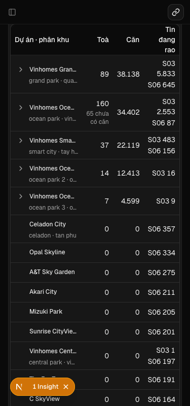
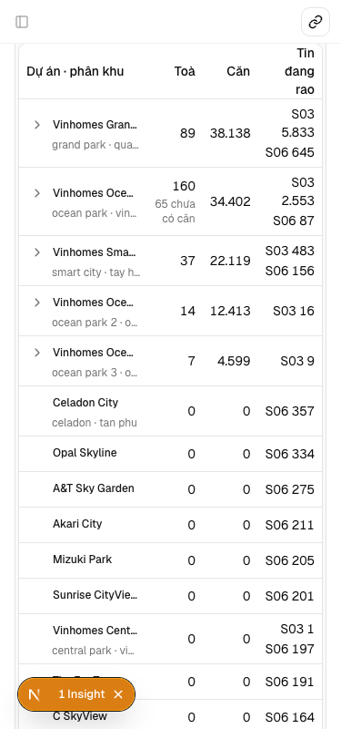
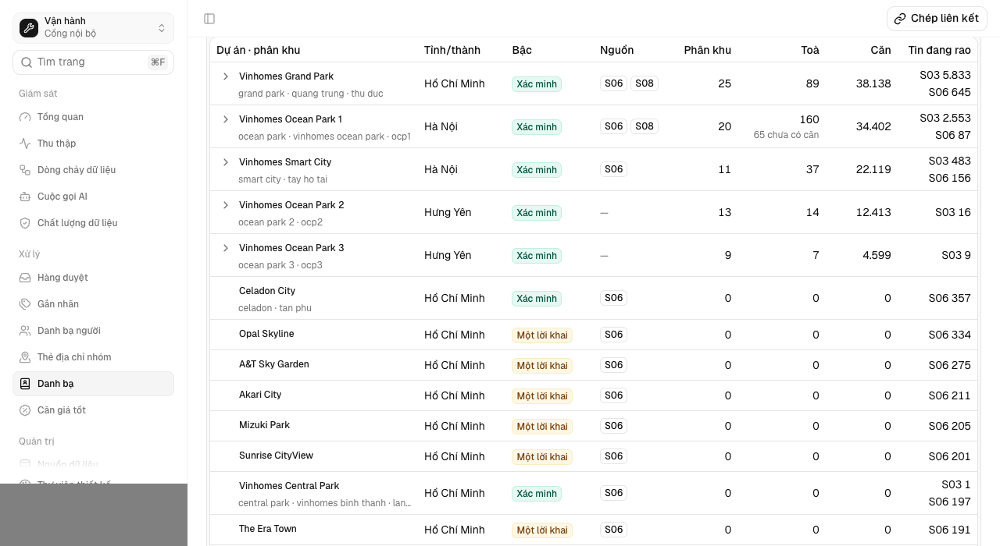
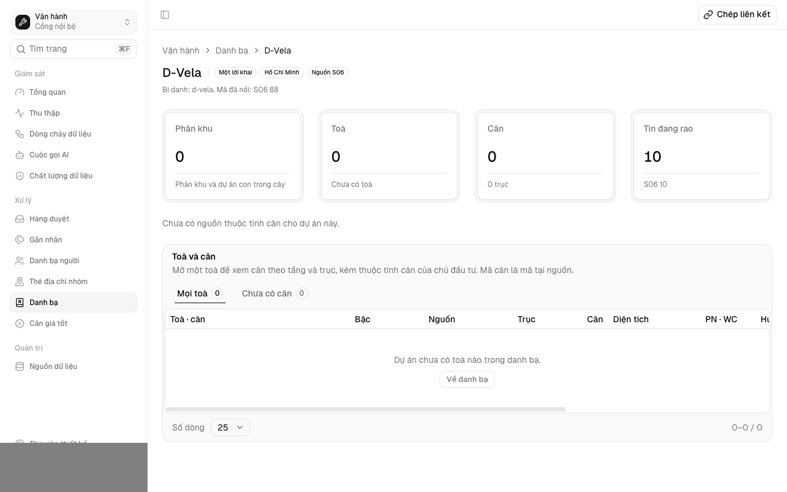
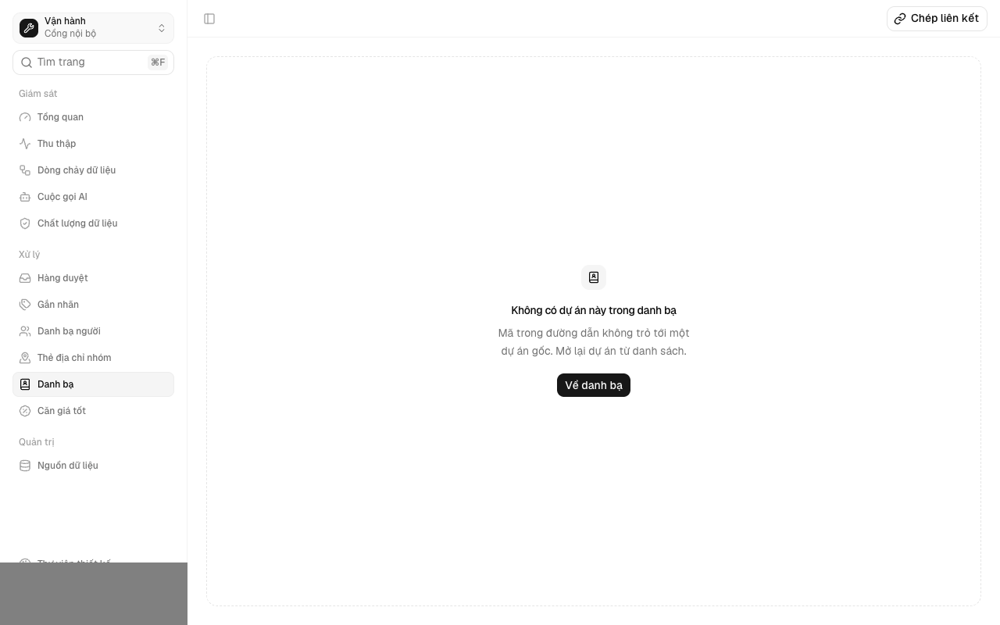
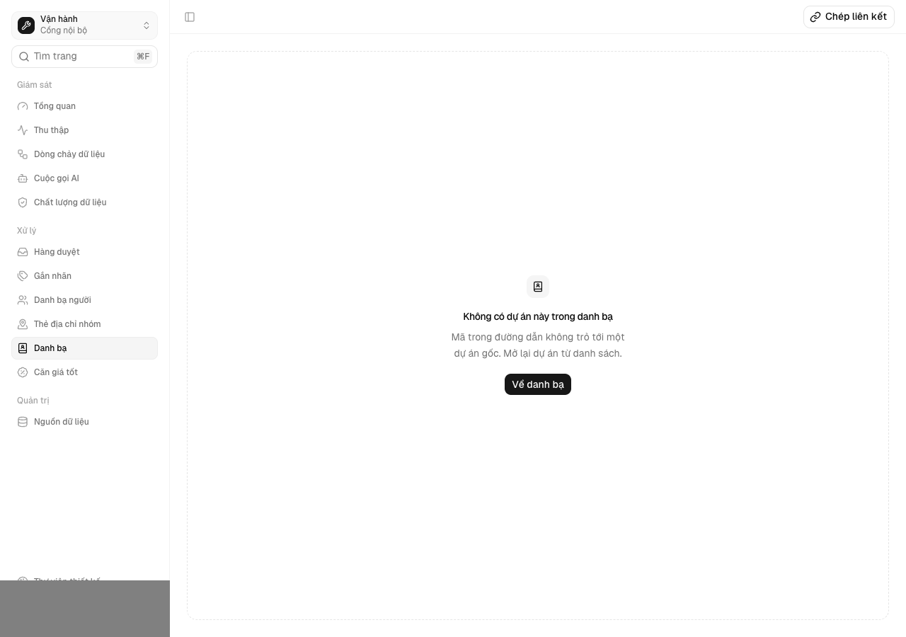
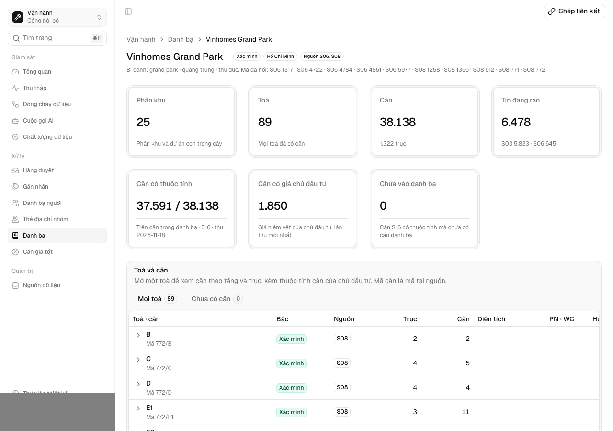

Trang một dự án của Danh bạ Ops đọc thuộc tính căn S16 bằng một câu thay hai (bỏ một trong hai lượt dựng view chạy song song — tải DB giảm một nửa, thời gian chờ đo và ghi lại), số ô phủ không đổi; nhãn nút mở hàng tiếng Việt, «Chưa có toà» khi dự án không có toà, trang mã sai riêng có nút «Về danh bạ»; danh sách bỏ bí danh trùng tên và ẩn cột Bậc trên màn hẹp
Vì sao làm
Hàng DA67 (dãy N1), đợt 1 của audit màn Danh bạ 27/11 (Mạnh bấm «Gửi giám sát»; báo cáo ở research-local/, gitignored, mục 4–5). Trang /ops/registry/<id> của 5 dự án có toà chạy hai câu thuộc tính S16 song song, mỗi câu dựng lại trọn hai view (≈3,3–3,4 s); phần riêng của ô phủ chỉ 66 ms. Nhãn «Expand row» lộ ở 15 bảng cây, dự án 0 toà ghi «Mọi toà đã có căn», mã sai rơi vào 404 của Invest. Danh sách: 329/344 dự án gốc có dòng phụ chỉ nhắc lại tên (DB máy thu 27/11). Chỉ app/, không migration, không đổi pipeline/. Thiết kế: design_doc.
Đã hứa
- AC-1 — Given một dự án có toà, When trang dự án đọc thuộc tính căn và ô phủ, Then lớp đọc chạy đúng MỘT câu chạm
- AC-2 — Given DB thử của hồ sơ DA40 (fixture TTC), When đọc lưới và ô phủ qua hàm mới và qua hai hàm cũ (`docThuocTinhCan`,
- AC-3 — Given DB máy thu (chỉ đọc) và 5 dự án có toà (16, 1, 4, 2, 3), When đọc bằng hàm mới và bằng bản `main` của
- AC-4 — Given dự án 16 trên DB máy thu, When đo tổng thời gian DB của việc đọc thuộc tính (cộng mọi câu, trung vị 3 lần),
- AC-5 — Given dự án 0 toà, DB chưa áp 113, hay `ONEHUB_TTC_LOI_THU=1`, When trang dự án tải, Then lần lượt: ô phủ
- AC-6 — Given một bảng cây dùng `DATA_GRID_VI`, When hàng mở được đang đóng hay đang mở, Then nút mở hàng có `aria-label`
- AC-7 — Given trang dự án, When `soToa = 0`, Then chân ô Toà ghi «Chưa có toà»; When có toà chưa có căn, Then «N toà chưa
- AC-8 — Given đường `/ops/registry/<mã>` với mã sai khuôn (`abc`), số không có nút, hay nút không phải dự án gốc, When mở,
- AC-9 — Given một dự án gốc có bí danh mà `fold(bí danh) = fold(tên)` và bí danh khác, When danh sách vẽ dòng phụ, Then dòng
- AC-10 — Given danh sách `/ops/registry`, When khổ 375 px, Then cột Bậc ẩn và các cột Toà, Căn, Tin đang rao hiện; When từ
Thiết kế
docs/superpowers/specs/2026-11-27-danh-ba-ops-gop-cau-s16-va-nhan-design.md
Quyết định
- 2026-11-27 · Máy · approach · S1 — Đã tra tri thức: Danh bạ Ops đợt 1: gộp hai câu thuộc tính căn S16 trên trang dự án danh bạ, nhãn tiếng Việt nút mở hàng, chưa có toà, trang không tìm thấy của danh bạ, bỏ bí danh trùng tên, ẩn cột bậc trên màn hẹpKho đã khai tri_thuc — bước thiết kế tra trang trước khi chọn.
- 2026-11-27 · Máy · approach · S1 — Ô phủ lấy bốn số bằng hàm gộp trên chính CTE kết quả (ket MATERIALIZED dùng hai lần) thay vì hàm cửa sổ trên dòng đã lọc như audit gợi ý; vẫn một lượt dựng view, số vẫn đếm ở SQL.trong_danh_ba đếm cả căn không có thuộc tính, còn dòng lưới chỉ giữ căn có thuộc tính hay giá; hàm cửa sổ trên dòng đã lọc mất số ấy và mất cả dòng số khi kết quả rỗng (E3 ca toà không căn nào có thuộc tính).
- 2026-11-27 · Máy · descope · S1 — bỏ design-pass — vòng chỉ đổi chữ, một breakpoint cột và thêm trang 404 theo khuôn Empty có sẵn trên màn đã dựng; ảnh chụp sáng, tối, 375 px nằm ở eval ui-check E13 của S4.Mọi ô của reuse-plan.md ở bậc 3–5 (khối đã cài), không khối mới nào cần duyệt bằng mắt trước khi viết.
- 2026-11-27 · Máy · descope · S1 — bỏ coverage-scan — phạm vi là danh sách đóng sáu việc GS giao từ mục 5 audit; Coverage ghi bốn trục bằng tay; đổi lại không có bằng chứng độ phủ từ bộ quét.Không gian AC một chiều theo từng việc đã khai (contract.md mục Coverage), không phải bài liệt kê không gian nhiều chiều.
- 2026-11-27 · Máy · approach · S1 — Nhãn nút mở hàng là «Mở hàng» và «Thu gọn hàng»; trang mã sai ghi «Không có dự án này trong danh bạ» với nút «Về danh bạ»; chân ô Toà «Chưa có toà» — không thêm thuật ngữ mới vào CONTEXT.md vì chỉ ghép Danh bạ, Toà đã có.CONTEXT.md đã có «Danh bạ» và ghi chú trang /ops/registry; «Về danh bạ» đã dùng ở du-an-toa-grid.tsx:186.
- 2026-11-27 · Máy · descope · S1 — bỏ coverage-scan — phạm vi là danh sách đóng sáu việc GS giao từ mục 5 audit; Coverage ghi bốn trục bằng tay; đổi lại không có bằng chứng độ phủ từ bộ quét.Không gian AC một chiều theo từng việc đã khai (contract.md mục Coverage), không phải bài liệt kê không gian nhiều chiều.
- 2026-11-27 · Người · seal · gate1 —
- 2026-11-27 · Người (GS) · approach · S1 — đường nền S1 đỏ ở engine: bộ giải gói chọn delivery-loop/acceptance-gate 3.1.1 (cài trên máy 26/11) thay acceptance-gate-kit 2.37.0 mà kho đang chép; công cụ, suite, lưới xanh; GS chấp nhận 27/11, mã HT4117 tệp lệch ở duong-nen.md là bản chép từ kit, luật kho cấm sửa tay; mọi lệnh kit của hồ sơ này (S4, ghim lại, pre-merge) chạy bằng bản 2.37.0 kho đang chép, bước nào tự chọn 3.1.1 thì dừng báo giám sát.
- 2026-11-27 · Máy · fix · S3 — E13 ghi rõ lệnh khởi động dev server của chính worktree ở :3466 và một bước kiểm đang nhìn đúng cây; worktree có app/node_modules cài riêng thay symlink sang checkout chính.Với node_modules nối mềm, next dev của worktree đụng khoá của server :3456 ở checkout chính (mã cũ); công cụ preview của phiên cũng khởi động ở checkout chính — ảnh chụp sẽ là mã cũ.
- 2026-11-27 · Máy · fix · S4-r2 — Ca AC-9 «ô tìm không đổi» đo trên hàng do dungCay thật dựng: bí danh thứ tư bị cắt khỏi dòng phụ vẫn tìm được, kèm chiều đỏ là bản dungCay dựng ô tìm từ bí danh đã lọc.Finding trong hợp đồng vòng 2 (review-findings, AC-9): assert cũ đọc chuỗi timKiem viết tay của fixture nên xanh cả khi dungCay bỏ bí danh khỏi ô tìm.
- 2026-11-27 · Máy · fix · S4-r1 — Cột ẩn theo khổ màn rời bảng thật bằng trạng thái columnVisibility của bảng (khuôn /ops/deals), và ở khổ dưới 768 px thu bề rộng bốn cột còn lại (tên 140, Toà 60, Căn 60, Tin 70 = 330 px) bằng columnSizing — không đặt style lên component ReUI; E12 và E13 đo bề rộng thay vì chỉ đọc lớp CSS.E13 vòng 1 đo scrollWidth 960 / clientWidth 333 ở 375 px: bảng table-fixed giữ thẻ <col> của cột chỉ ẩn bằng CSS nên vẫn rộng bằng tổng mọi cột; E12 cũ chỉ kiểm lớp «hidden md:table-cell» nên xanh suông.
Bằng chứng
Các eval
| Eval | Tiêu chí | Loại | Verdict | run_id | verified_at |
|---|---|---|---|---|---|
| E1 | AC-1 | script | PASS | minted-danh-ba-ops-gop-cau-s16-va-nhan-E1-r2 | 2026-11-27T11:22:25Z |
| E2 | AC-1 | test | PASS | minted-danh-ba-ops-gop-cau-s16-va-nhan-E2-r2 | 2026-11-27T11:22:25Z |
| E3 | AC-2 | test | PASS | minted-danh-ba-ops-gop-cau-s16-va-nhan-E3-r2 | 2026-11-27T11:22:25Z |
| E4 | AC-3 | script | PASS | minted-danh-ba-ops-gop-cau-s16-va-nhan-E4-r2 | 2026-11-27T11:22:25Z |
| E5 | AC-4 | script | PASS | minted-danh-ba-ops-gop-cau-s16-va-nhan-E5-r2 | 2026-11-27T11:22:25Z |
| E6 | AC-5 | test | PASS | minted-danh-ba-ops-gop-cau-s16-va-nhan-E6-r2 | 2026-11-27T11:22:25Z |
| E7 | AC-6 | test | PASS | minted-danh-ba-ops-gop-cau-s16-va-nhan-E7-r2 | 2026-11-27T11:22:25Z |
| E8 | AC-7 | test | PASS | minted-danh-ba-ops-gop-cau-s16-va-nhan-E8-r2 | 2026-11-27T11:22:25Z |
| E9 | AC-8 | test | PASS | minted-danh-ba-ops-gop-cau-s16-va-nhan-E9-r2 | 2026-11-27T11:22:25Z |
| E10 | AC-9 | test | PASS | minted-danh-ba-ops-gop-cau-s16-va-nhan-E10-r2 | 2026-11-27T11:22:25Z |
| E11 | AC-9 | script | PASS | minted-danh-ba-ops-gop-cau-s16-va-nhan-E11-r2 | 2026-11-27T11:22:25Z |
| E12 | AC-10 | test | PASS | minted-danh-ba-ops-gop-cau-s16-va-nhan-E12-r2 | 2026-11-27T11:22:25Z |
| E13 | AC-10 | ui-check | PASS | minted-danh-ba-ops-gop-cau-s16-va-nhan-E13-r2 | 2026-11-27T11:22:25Z |
Chi tiết từng eval
PASS E1 · script
AC-1: Given một dự án có toà, When trang dự án đọc thuộc tính căn và ô phủ, Then lớp đọc chạy đúng MỘT câu chạm
so-s16: ĐẠT
PASS E2 · test
AC-1: Given một dự án có toà, When trang dự án đọc thuộc tính căn và ô phủ, Then lớp đọc chạy đúng MỘT câu chạm
bộ ca màn hình (probes/kiem.sh man) xanh toàn bộ
PASS E3 · test
AC-2: Given DB thử của hồ sơ DA40 (fixture TTC), When đọc lưới và ô phủ qua hàm mới và qua hai hàm cũ (`docThuocTinhCan`,
bộ ca TTC (probes/kiem.sh ttc) xanh toàn bộ
PASS E4 · script
AC-3: Given DB máy thu (chỉ đọc) và 5 dự án có toà (16, 1, 4, 2, 3), When đọc bằng hàm mới và bằng bản `main` của
so-s16: ĐẠT
PASS E5 · script
AC-4: Given dự án 16 trên DB máy thu, When đo tổng thời gian DB của việc đọc thuộc tính (cộng mọi câu, trung vị 3 lần),
so-s16: ĐẠT
PASS E6 · test
AC-5: Given dự án 0 toà, DB chưa áp 113, hay `ONEHUB_TTC_LOI_THU=1`, When trang dự án tải, Then lần lượt: ô phủ
bộ ca màn hình (probes/kiem.sh man) xanh toàn bộ
PASS E7 · test
AC-6: Given một bảng cây dùng `DATA_GRID_VI`, When hàng mở được đang đóng hay đang mở, Then nút mở hàng có `aria-label`
bộ ca màn hình (probes/kiem.sh man) xanh toàn bộ
PASS E8 · test
AC-7: Given trang dự án, When `soToa = 0`, Then chân ô Toà ghi «Chưa có toà»; When có toà chưa có căn, Then «N toà chưa
bộ ca màn hình (probes/kiem.sh man) xanh toàn bộ
PASS E9 · test
AC-8: Given đường `/ops/registry/<mã>` với mã sai khuôn (`abc`), số không có nút, hay nút không phải dự án gốc, When mở,
bộ ca màn hình (probes/kiem.sh man) xanh toàn bộ
PASS E10 · test
AC-9: Given một dự án gốc có bí danh mà `fold(bí danh) = fold(tên)` và bí danh khác, When danh sách vẽ dòng phụ, Then dòng
bộ ca màn hình (probes/kiem.sh man) xanh toàn bộ
PASS E11 · script
AC-9: Given một dự án gốc có bí danh mà `fold(bí danh) = fold(tên)` và bí danh khác, When danh sách vẽ dòng phụ, Then dòng
bi-danh: ĐẠT
PASS E12 · test
AC-10: Given danh sách `/ops/registry`, When khổ 375 px, Then cột Bậc ẩn và các cột Toà, Căn, Tin đang rao hiện; When từ
bộ ca màn hình (probes/kiem.sh man) xanh toàn bộ
PASS E13 · ui-check
AC-10: Given danh sách `/ops/registry`, When khổ 375 px, Then cột Bậc ẩn và các cột Toà, Căn, Tin đang rao hiện; When từ








Vòng verify
- Round 2: 13 eval (E1–E13) va cac lenh suite deu xanh; verdict PASS. Noi dung round nay thay tron round cu, lich su round truoc xem run-log.jsonl.
- run_id: repin-20261127T115628Z-98256
- sha: 2ab1a3364f9350bf2f151b4a180122cbc94e9e56 · suites: 8 lệnh exit 0 · evals: 12/12 eval máy đạt kỳ vọng · ngoài làn máy: E13
Tài nguyên
| Khối | Tác tử | Token đầu ra |
|---|
0 lượt chấm · tổng 0 token
Giới hạn và ngoài hợp đồng
- Đếm «Tin đang rao» tính sẵn và tốc độ danh sách `/ops/registry` (DA68, đợt 2, có migration).
- Trang dự án tải căn theo toà, ô tìm toà, phân trang trong toà, đầu cột dính (đợt 3).
- Tính sẵn `v_unit_thuoc_tinh`, `v_s16_gia_cdt` ở pipeline (đợt 4).
- `FramePanel className="p-0! shadow-none!"` (chờ khuôn ReUI chuẩn, sửa cả năm chỗ một lần).
- Bí danh, mã đã nối ở mô tả đầu trang dự án; 25% căn thiếu tầng (làn dữ liệu).
Giao
chưa ghi quan sát production